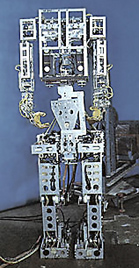
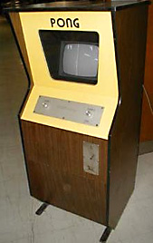

Der Wabot-1, entwickelt an der Wasada Universität zwischen 1970-1973, gilt als erster "humanoider Roboter" der Welt. Der Wabot besaß funktionierende Beine, Greifhände mit Sensoren und AI-Systeme, die ihm das Verhalten eines etwa eineinhalbjährigen Kindes ermöglichten. Sein "Gehen" war statisch, indem er das Zentrum der Schwerkraft von einem Fuß auf den anderen verlagerte...